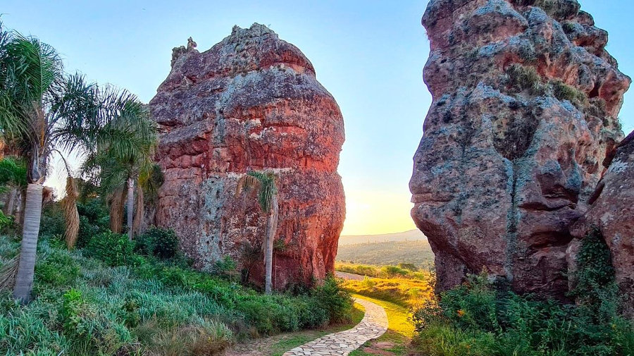
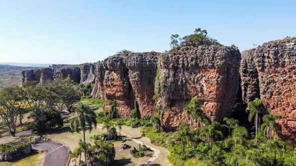
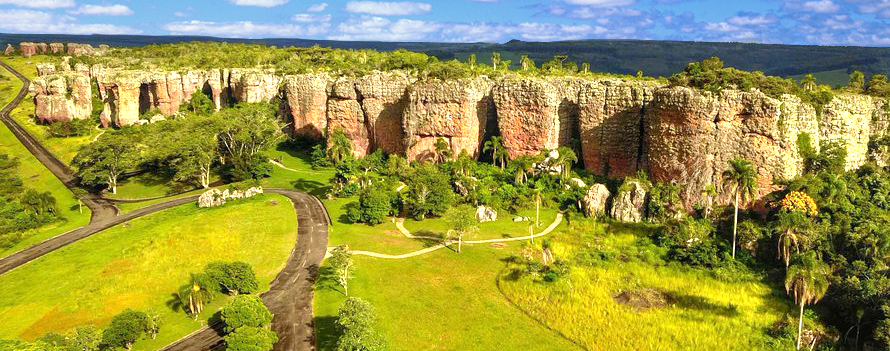

História e Cultura
O Parque Estadual de Vila Velha, localizado em Ponta Grossa, nos Campos Gerais do Paraná, é um dos mais importantes patrimônios naturais do Brasil. Suas formações de arenito começaram a se formar há cerca de 300 milhões de anos e foram esculpidas pela ação do vento e da chuva ao longo do tempo, dando origem às paisagens que tornam o parque mundialmente conhecido. Antes da colonização, a região era habitada por povos indígenas e, mais tarde, tornou-se parte da rota dos tropeiros, que contribuíram para o desenvolvimento econômico e histórico dos Campos Gerais. O interesse científico e a necessidade de preservar esse patrimônio levaram à criação do Parque Estadual de Vila Velha, em 12 de outubro de 1953. Além dos famosos arenitos, o parque abriga as Furnas e a Lagoa Dourada, importantes atrações naturais e objetos de estudos científicos. Atualmente, Vila Velha é uma das principais unidades de conservação do Paraná, desempenhando um papel fundamental na preservação da biodiversidade, na educação ambiental, na pesquisa científica e no turismo sustentável.

Sua Importância Cultural
A importância cultural do Parque Estadual de Vila Velha está ligada à sua relação com a história, a identidade e as tradições da região dos Campos Gerais do Paraná. O local faz parte da memória dos povos indígenas que habitaram a área e também do caminho percorrido pelos tropeiros, que tiveram papel importante na formação econômica e cultural do estado. As formações de arenito do parque, além de seu valor natural, tornaram-se símbolos da paisagem paranaense e despertam o interesse de moradores, turistas, artistas e pesquisadores. Suas figuras rochosas, como a famosa Taça, fazem parte do imaginário popular e representam a conexão entre a natureza e a história da região. Atualmente, o Parque Estadual de Vila Velha contribui para a valorização da cultura local por meio do turismo, da educação ambiental e da preservação do patrimônio natural, ajudando a manter viva a relação entre as pessoas e a paisagem que caracteriza os Campos Gerais do Paraná. .

Sua Importância na Atualidade
A importância do Parque Estadual de Vila Velha na atualidade está ligada à preservação de um dos mais importantes patrimônios naturais, históricos e culturais do Paraná. O parque protege formações geológicas únicas, como os arenitos, as Furnas e a Lagoa Dourada, que representam milhões de anos de transformação da paisagem pela ação da natureza. Além disso, a área contribui para a conservação da biodiversidade dos Campos Gerais, protegendo diferentes espécies de plantas e animais. Atualmente, o Parque Estadual de Vila Velha possui grande relevância para o turismo, atraindo visitantes interessados em conhecer suas belezas naturais, realizar atividades de lazer e aprender sobre a história geológica e ambiental da região. O local também é importante para a pesquisa científica e para projetos de educação ambiental, que ajudam a conscientizar a população sobre a necessidade de preservar o meio ambiente. Além do valor ecológico, o parque tem importância econômica e cultural, pois fortalece o turismo sustentável e valoriza a identidade dos Campos Gerais do Paraná. Suas paisagens, como a formação conhecida como Taça, tornaram-se símbolos do estado e representam a relação entre a sociedade, a história e a natureza. Dessa forma, a preservação do Parque Estadual de Vila Velha garante que esse patrimônio continue sendo apreciado e estudado pelas futuras gerações.

https://www.google.com/url?sa=t&source=web&rct=j&url=https%3A%2F%2Fpt.wikipedia.org%2Fwiki%2FFicheiro%3AParque_estadual_de_vila_velha_latitude_25%25C2%25B015%276.51%2522S_longitude_49%25C2%25B059%2744.35%2522O.jpg&ved=0CBYQjRxqGAoTCIDK0J_Rm5YDFQAAAAAdAAAAABCRAg&opi=89978449Curiosidades
Curiosidade
Uma curiosidade incrível sobre o Parque Estadual de Vila Velha, em Ponta Grossa, é que aquelas enormes rochas em formato de taça, bota, camelo e garrafa têm cerca de 300 milhões de anos! 😮 Naquela época, a região estava próxima ao Polo Sul e fazia parte do supercontinente Gondwana, em um ambiente dominado por geleiras. As areias transportadas pela água do derretimento das geleiras foram se acumulando e, com o passar de milhões de anos, deram origem aos arenitos. O mais impressionante é que as formas que vemos hoje são bem mais recentes: principalmente nos últimos 1,8 milhão de anos, a chuva, o vento e outras formas de erosão foram esculpindo as rochas, como se fossem esculturas gigantes feitas pela natureza. E tem uma curiosidade extra: a famosa Taça, símbolo do parque, não foi "construída" por ninguém — ela surgiu naturalmente devido à erosão diferencial do arenito.
Curiosidades
Uma curiosidade bem legal é que a Lagoa Dourada está ligada às Furnas por canais subterrâneos. Ou seja, a água que vemos na lagoa faz parte de um sistema de circulação de água subterrânea que conecta essas formações. E o nome “Dourada” vem de um efeito muito bonito: quando o sol bate na água, ela pode adquirir um brilho dourado, relacionado à composição mineral do fundo da lagoa. ✨ Mais uma curiosidade: Vila Velha foi o primeiro parque estadual criado no Paraná, em 1953.